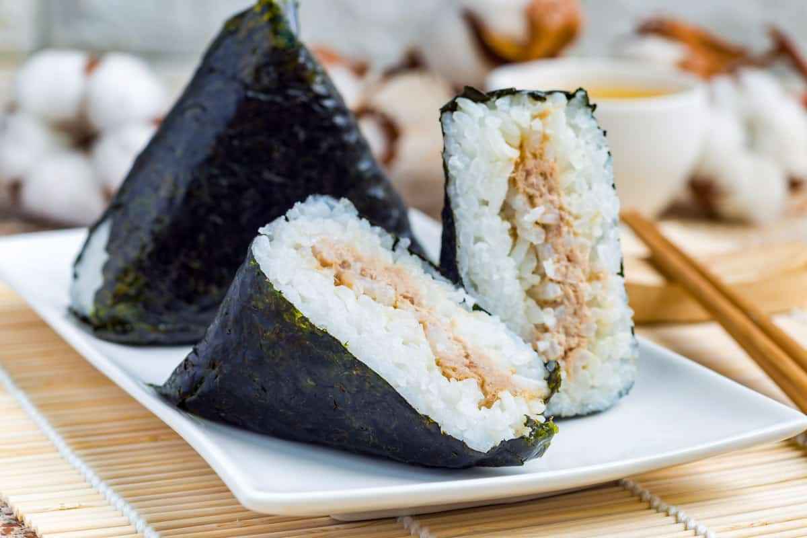

Onigiri

Classic Japanese Dish: Onigiri with Tuna
One of the most simple recipes to come from Japan. It's easy, light, and most importantly, healthy.
Ingredients:
- 1 cup of uncooked sushi rice
- One can of Tuna
- Japanese Mayonnaise, such as Kewpie
- 1½ cups of water
- Additional seperate water, about ¼ cup
- ¼ teaspoon of salt
- 2 sheets nori (dry seaweed), cut into 1/2-inch strips
- (Optional) 2 tablespoons sesame seeds
Steps:
- Wash rice in a mesh strainer until water runs clear.
The easiest method is to use a rice cooker, simply put the rice and water into the rice cooker and turn on.
Otherwise if you want to use a saucepan, combine washed rice and 1½ cups water in a saucepan.
Bring to a boil over high heat, stirring occasionally. Reduce heat to low; cover, and simmer rice until water is absorbed, 15 to 20 minutes.
Let rice rest for 15 minutes to continue to steam and become tender. Allow cooked rice to cool.
- Mix the can of Tuna with the Japanese Mayonnaise
- Combine ¼ cup water with salt in a small bowl; use to dampen hands before handling rice.
Divide cooked rice into equal portions. Should be about the size of your palm.
- Create a dimple in the rice and fill with a heaping teaspoon of the tuna mayonnaise.
Cover with rice and press lightly to enclose filling inside rice ball.
Gently press rice to shape into a triangle; wrap with a strip of nori and optionally sprinkle with sesame seeds. Repeat with remaining portions of rice.
Back to Other Recipes